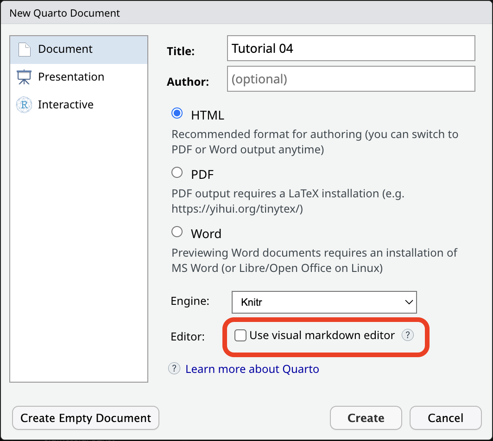
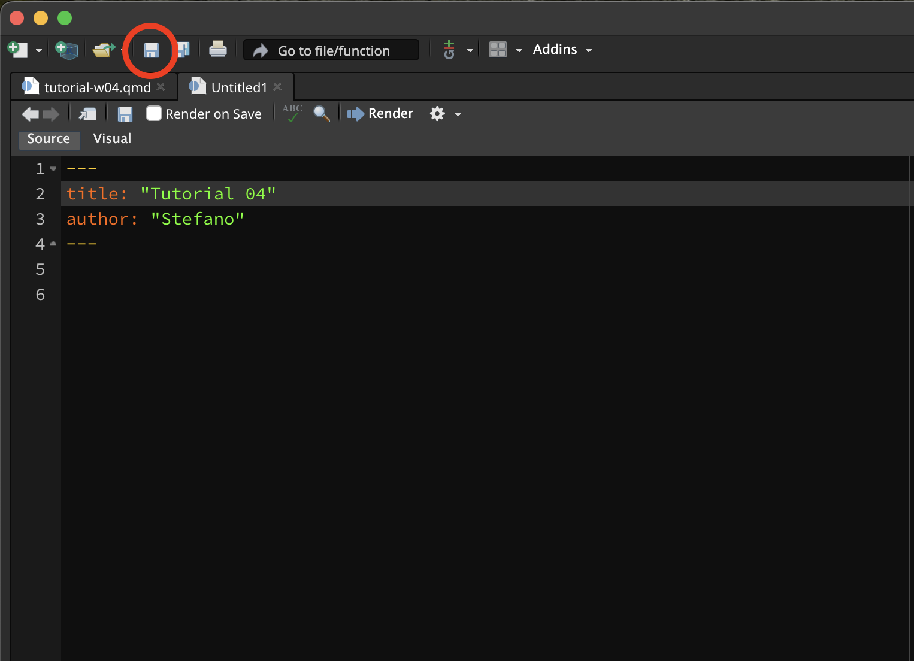
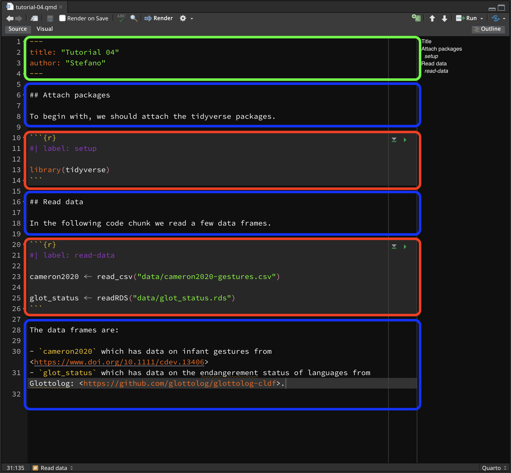
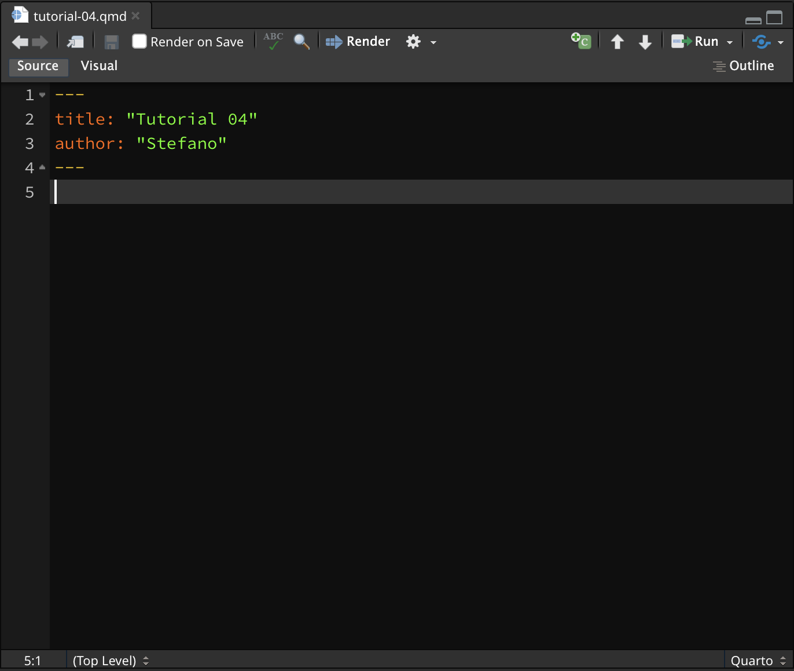
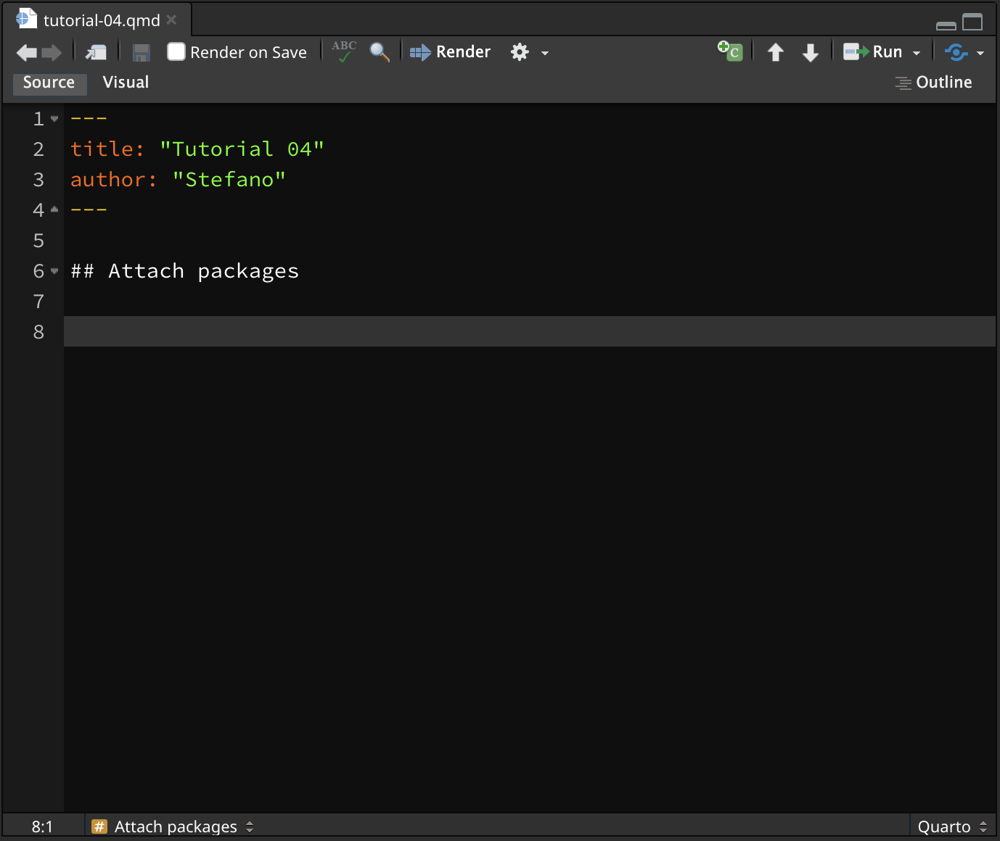
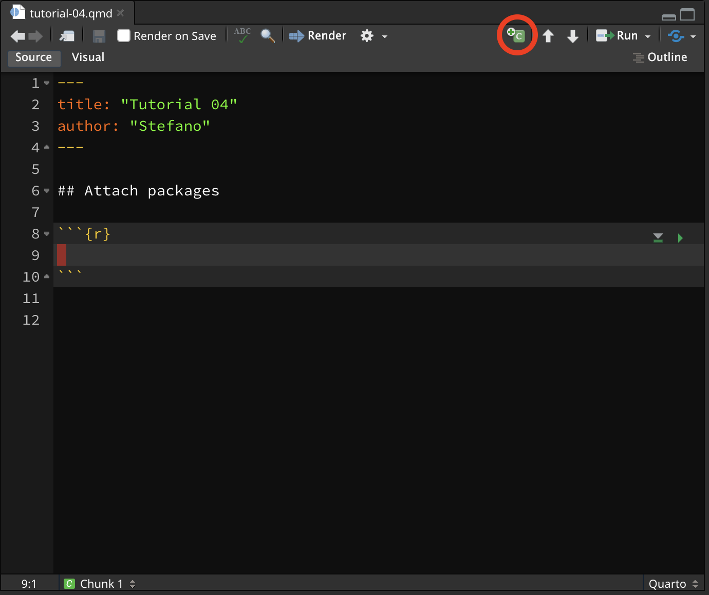
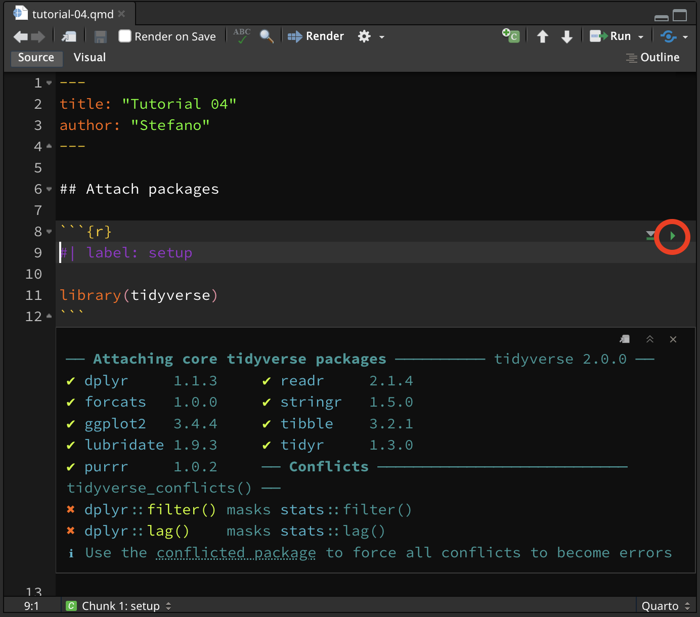
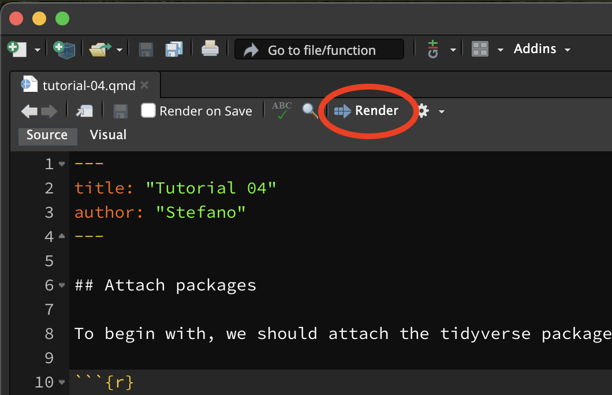
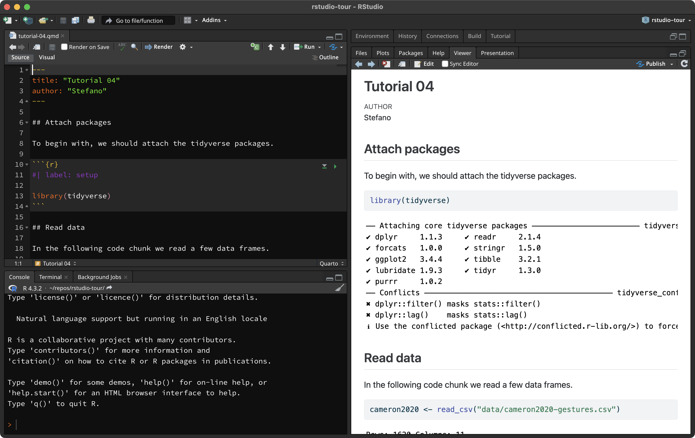

Introduction to Quarto
1 Quarto
Keeping track of the code you use for data analysis is a very important aspect of research project managing: not only the code is there if you need to rerun it later, but it allows your data analysis to be reproducible (i.e., it can be reproduced by you or other people in such a way that starting with the same data and code you get to the same results).
R scripts are great for writing code, and you can even document the code (add explanations or notes) with comments (i.e. lines that start with #).
But for longer text or complex data analysis reports, R scripts can be a bit cumbersome.
A solution to this is using Quarto files (they have the .qmd extension).
1.1 Code… and text!
Quarto is a file format that allows you to mix code and formatted text in the same file.
This means that you can write dynamic reports using Quarto files: dynamic reports are just like analysis reports (i.e. they include formatted text, plots, tables, code output, code, etc…) but they are dynamic in the sense that if, for example, data or code changes, you can just rerun the report file and all code output (plots, tables, etc…) is updated accordingly!
1.2 Formatting text
R comments in R scripts cannot be formatted (for example, you can’t make text bold or italic).
Text in Quarto files can be fully formatted using a simple but powerful mark-up language called markdown.
You don’t have to learn markdown all in one go, so I encourage you to just learn it bit by bit, at your pace. You can look at the the Markdown Guide for an in-depth intro and/or dive in the Markdown Tutorial for a hands-on approach.
A few quick pointers (you can test them in the Markdown Live Preview):
Text can be made italics by enclosing it between single stars:
*this text is in italics*.You can make text bold with two stars:
**this text is bold!**.Headings are created with
#:
# This is a level-1 heading
## This is a level-2 heading1.3 Create a .qmd file
To create a new .qmd file, just click on the New file button (the white square with the green plus symbol), then Quarto Document.... (If you are asked to install/update packages, do so.)

A window will open. Add a title of your choice and your name. Make sure the Use visual markdown editor is NOT ticked, then click Create (you will be free to use the visual editor later, but it is important that you first see what a Quarto document looks like under the hood first).

A new .qmd file will be created and will open in the File Editor panel in RStudio.
Note that creating a Quarto file does not automatically save it on your computer. To do so, either use the keyboard short-cut CMD+S/CTRL+S or click on the floppy disk icon in the menu below the file tab.

Save the file inside the code/ folder with the following name: tutorial-w04.qmd.
Remember that all the files of your RStudio project don’t live inside RStudio but on your computer.
1.4 Parts of a Quarto file
A Quarto file usually has three main parts:
The YAML header (green in the screenshot below).
Code chunks (red).
Text (blue).

Each Quarto file has to start with a YAML header, but you can include as many code chunks and as much text as you wish, in any order.
1.5 Working directory
When using Quarto projects, the working directory (the directory all relative paths are relative to) is the project folder.
However, when running code from a Quarto file, the code is run as if the working directory were the folder in which the file is saved.
This isn’t an issue if the Quarto file is directly in the project folder, but in our case our Quarto files live in the code/ folder within the project folder (and it is good practice to do so!).
We can instruct R to always run code from the project folder (i.e. the working directory is the project folder). This is when the _quarto.yml file comes into play.
Open the _quarto.yml file in RStudio (you can simply click on the file in the Files tab and that will open the file in the RStudio editor). Add the line execute-dir: project under the title. Note that indentation should be respected, so the line you write should align with title:, not with project:.
project:
title: "dal"
execute-dir: projectNow, all code in Quarto files, no matter where they are saved, will be run with the project folder as the working directory.
1.6 How to add and run code
You will use the Quarto document you created to write text and code for this tutorial.
Delete everything in the Quarto document below the YAML header. It’s just example text—we’re not attached to it!
This is what the Quarto document should look like now (if your YAML header also contains “format:html, that’s completely fine):

Now add an empty line and in the following line write a second-level heading ## Attach packages, followed by two empty lines. Like so:

Now we can insert a code chunk to add the code to attach the tidyverse. To insert a new code chunk, you can click on the Insert a new code chunk button (the little green square icon with a C and a plus) , or you can press OPT+CMD+I/ALT+CTRL+I.

A new R code chunk will be inserted at the text cursor position.
Now go ahead and add the following lines of code inside the R code chunk.
#| label: setup
library(tidyverse)Run the setup chunk now.

You will see messages printed below the code chunk, in your Quarto file (don’t worry about the Conflicts, they just tell you that some functions from the tidyverse packages have replaced the base R functions, which is OK).
1.7 Render Quarto files to HTML
You can render a .qmd file into a nicely formatted HTML file.
To render a Quarto file, just click on the Render button and an HTML file will be created and saved in the same location of the Quarto file.

It may be shown in the Viewer pane (like in the picture below) or in a new browser window. There are a few ways you can set this option to whichever version you prefer. Follow the instructions that work for you—they all do the same thing.
Tools > Global Options > R Markdown > Show output preview in…Preferences > R Markdown > Basics > Show output preview in….- Right beside the
Renderbutton, you will see a little white gear. Click on that gear, and a drop-down menu will open. Click onPreview in WindoworPreview in Viewer Pane, whichever you prefer.

Rendering Quarto files is not restricted to HTML, but also PDFs and even Word documents!
This is very handy when you are writing an analysis report you need to share with others.
The assessments of this course will require you to write text and code in a Quarto file and render it to HTML.
You could even write your dissertation in Quarto!
The following sections will introduce you to the basics of plotting data. You will keep learning how to create plots throughout the course.
2 Render your Quarto file!
Now that you have done all of this hard work, why don’t you try and render the Quarto file you’ve been working on to an HTML file?
Go ahead, click on the “Render” button and if everything works fine you should see a rendered HTML file in a second!
Note that you will be asked to render your Quarto files for the assessments, so I recommend you try this out now.
3 Summary
That’s all for this week!